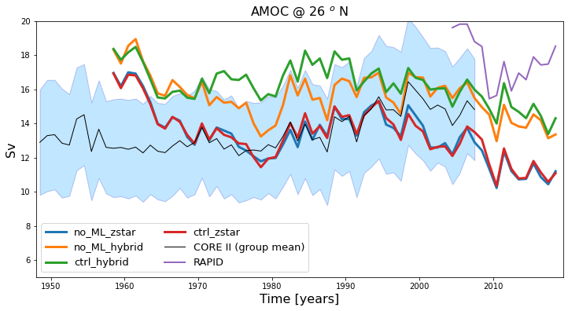

Meridional Overturning Circulation
Contents
Meridional Overturning Circulation#
%%capture
# comment above line to see details about the run(s) displayed
from misc import *
%matplotlib inline
ds = []
for c, l, p in zip(casename,label, ocn_path):
dummy = xr.open_dataset(p+'{}_MOC.nc'.format(c))
ds.append(dummy)
Global MOC#
# Global MOC
from mom6_tools import m6plot, m6toolbox
from mom6_tools.moc import *
import glob
# this hack needs to be fixed
file = sorted(glob.glob(OUTDIR[0]+'/*.h_*.nc'))[0:2]
ds1 = xr.open_mfdataset(file)
varName = 'vmo'
Zmod = m6toolbox.get_z(ds1, depth, varName)
pnum = len(ds)
for i in range(pnum):
m6plot.setFigureSize([16,9],576,debug=False)
axis = plt.gca()
cmap = plt.get_cmap('dunnePM')
zg = Zmod.min(axis=-1);
psiPlot = ds[i].moc.values
yyg = grd.geolat_c[:,:].max(axis=-1)+0*zg
ci=m6plot.pmCI(0.,40.,5.)
plotPsi(yyg, zg, psiPlot, ci, 'Global MOC [Sv]')
plt.xlabel(r'Latitude [$\degree$N]')
plt.suptitle(label[i])
findExtrema(yyg, zg, psiPlot, max_lat=-30.)
findExtrema(yyg, zg, psiPlot, min_lat=25., min_depth=250.)
findExtrema(yyg, zg, psiPlot, min_depth=2000., mult=-1.)
plt.gca().invert_yaxis()

Atlantic MOC#
basin_code = genBasinMasks(grd.geolon, grd.geolat, depth, xda=False);
11.16428 64.78855 [391, 434]
for i in range(pnum):
m6plot.setFigureSize([16,9],576,debug=False)
cmap = plt.get_cmap('dunnePM')
ci=m6plot.pmCI(0.,22.,2.)
m = 0*basin_code; m[(basin_code==2) | (basin_code==4) | (basin_code==6) | (basin_code==7) | (basin_code==8)]=1
z = (m*Zmod).min(axis=-1)
psiPlot = ds[i].amoc.values
yy = grd.geolat_c[:,:].max(axis=-1)+0*z
plotPsi(yy, z, psiPlot, ci, 'Atlantic MOC [Sv]')
plt.xlabel(r'Latitude [$\degree$N]')
plt.suptitle(label[i])
findExtrema(yy, z, psiPlot, min_lat=26.5, max_lat=27., min_depth=250.) # RAPID
findExtrema(yy, z, psiPlot, min_lat=44, max_lat=46., min_depth=250.) # RAPID
findExtrema(yy, z, psiPlot, max_lat=-33.)
findExtrema(yy, z, psiPlot)
findExtrema(yy, z, psiPlot, min_lat=5.)
plt.gca().invert_yaxis()

AMOC profile at 26N#
fig, ax = plt.subplots(figsize=(10,6))
rapid_vertical = xr.open_dataset('/glade/work/gmarques/cesm/datasets/RAPID/moc_vertical.nc')
ax.plot(rapid_vertical.stream_function_mar.mean('time'),
rapid_vertical.depth, 'k', label='RAPID', lw=3)
for i in range(pnum):
ax.plot(ds[i]['amoc'].sel(yq=26, method='nearest'), ds[i].zl, label=label[i], lw=3)
ax.legend()
plt.gca().invert_yaxis()
plt.grid()
ax.set_xlabel('AMOC @ 26N [Sv]')
ax.set_ylabel('Depth [m]');

AMOC time series#
# load AMOC time series data (5th) cycle used in Danabasoglu et al., doi:10.1016/j.ocemod.2015.11.007
path = '/glade/p/cesm/omwg/amoc/COREII_AMOC_papers/papers/COREII.variability/data.original/'
amoc_core_26 = xr.open_dataset(path+'AMOCts.cyc5.26p5.nc')
# load AMOC from POP JRA-55
amoc_pop_26 = xr.open_dataset('/glade/u/home/bryan/MOM6-modeloutputanalysis/'
'AMOC_series_26n.g210.GIAF_JRA.v13.gx1v7.01.nc')
# load RAPID time series
rapid = xr.open_dataset('/glade/work/gmarques/cesm/datasets/RAPID/moc_transports.nc').resample(time="1Y",
closed='left',keep_attrs=True).mean('time',keep_attrs=True)
# plot
fig = plt.figure(figsize=(12, 6))
for i in range(pnum):
plt.plot(np.arange(len(ds[i].time))+1958.5 ,ds[i]['amoc_26'].values,
label=label[i], lw=3)
# core data
core_mean = amoc_core_26['MOC'].mean(axis=0).data
core_std = amoc_core_26['MOC'].std(axis=0).data
plt.plot(amoc_core_26.time,core_mean, label='CORE II (group mean)',
color='black', lw=1)
plt.fill_between(amoc_core_26.time, core_mean-core_std, core_mean+core_std,
alpha=0.25, edgecolor='#1B2ACC', facecolor='#089FFF')
# pop data
plt.plot(np.arange(len(amoc_pop_26.time))+1958.5 ,amoc_pop_26.AMOC_26n.values,
label='POP', lw=2)
# rapid
plt.plot(np.arange(len(rapid.time))+2004.5 ,rapid.moc_mar_hc10.values,
label='RAPID', lw=2)
plt.title('AMOC @ 26 $^o$ N', fontsize=16)
plt.ylim(5,20)
plt.xlim(1948,1958.5+len(ds[0].time))
plt.xlabel('Time [years]', fontsize=16); plt.ylabel('Sv', fontsize=16)
plt.legend(fontsize=13, ncol=2);

amoc_core_45 = xr.open_dataset(path+'AMOCts.cyc5.45.nc')
amoc_pop_45 = xr.open_dataset('/glade/u/home/bryan/MOM6-modeloutputanalysis/'
'AMOC_series_45n.g210.GIAF_JRA.v13.gx1v7.01.nc')
# plot
fig = plt.figure(figsize=(12, 6))
for i in range(pnum):
plt.plot(np.arange(len(ds[i].time))+1958.5 ,ds[i]['amoc_45'].values,
label=label[i], lw=3)
# core data
core_mean = amoc_core_45['MOC'].mean(axis=0).data
core_std = amoc_core_45['MOC'].std(axis=0).data
plt.plot(amoc_core_45.time,core_mean, label='CORE II (group mean)',
color='black', lw=2)
plt.fill_between(amoc_core_45.time, core_mean-core_std, core_mean+core_std,
alpha=0.25, edgecolor='#1B2ACC', facecolor='#089FFF')
# pop data
plt.plot(np.arange(len(amoc_pop_45.time))+1958. ,
amoc_pop_45.AMOC_45n.values, label='POP', lw=2)
plt.title('AMOC @ 45 $^o$ N', fontsize=16)
plt.ylim(5,20)
plt.xlim(1948,1958+len(ds[0].time))
plt.xlabel('Time [years]', fontsize=16); plt.ylabel('Sv', fontsize=16)
plt.legend(fontsize=13, ncol=2);

Submesoscale-induced Global MOC#
for i in range(pnum):
m6plot.setFigureSize([16,9],576,debug=False)
axis = plt.gca()
cmap = plt.get_cmap('dunnePM')
z = Zmod.min(axis=-1);
psiPlot = ds[i].moc_FFM.values
#yy = y[1:,:].max(axis=-1)+0*z
yy = grd.geolat_c[:,:].max(axis=-1)+0*z
ci=m6plot.pmCI(0.,20.,2.)
plotPsi(yy, z, psiPlot, ci, 'Global MOC [Sv] due to vhML', zval=[0.,-400.,-6500.])
plt.xlabel(r'Latitude [$\degree$N]')
plt.suptitle(label[i])
plt.gca().invert_yaxis()

Eddy(GM)-induced Global MOC#
for i in range(pnum):
m6plot.setFigureSize([16,9],576,debug=False)
axis = plt.gca()
cmap = plt.get_cmap('dunnePM')
z = Zmod.min(axis=-1);
psiPlot = ds[i].moc_GM
yy = grd.geolat_c[:,:].max(axis=-1)+0*z
ci=m6plot.pmCI(0.,20.,1.)
plotPsi(yy, z, psiPlot, ci, 'Global MOC [Sv] due to GM')
plt.xlabel(r'Latitude [$\degree$N]')
plt.suptitle(label[i])
plt.gca().invert_yaxis()